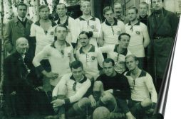

Из исторических источников известно, что Коломяги – деревня, принадлежавшая графу Орлову-Денисову, расположена на гористом месте по левой стороне Финляндской железной дороги. Пути сообщения: Финляндская и Приморская железные дороги, а также шоссе, соединяющее Коломяги с Черной речкой. Торговые заведения сосредоточены были большей частью у парка по 1-й и 2-й Никитинским улицам.
В происхождении названия Коломяги нет определенности. Некоторые полагают, что оно связано с особенностью горы, на которой находилось селение («коло» по-фински – углубление, дупло, «мякки» – горка, холм). Другие выводят название от глагола «колоа» – окорять, очищать от коры, и считают, что на этом месте производилась обработка деревьев.
В 1870 году открылось движение по Финляндской железной дороге с ближайшей к Коломягам станцией Удельная. Однако проезд от нее к деревне появился лишь спустя 30 лет по вновь проложенной Мариинской (ныне – Аккуратова) улице.
В 1893 году в эксплуатацию вступила одноколейная ветка Приморской железной дороги, построенной инженером П.А. Авенариусом. Ветка шла от Новой Деревни до Озерков и имела станции Скачки (у только что открывшегося ипподрома), Коломяги (где ныне стоит церковь) и Графскую (возле Главной улицы). Закрылась ветка в 20-х годах. Часть ее трассы на участке Коломяги – Озерки в недалеком прошлом использовалась под детскую узкоколейную «Малую Октябрьскую» железную дорогу.
В 1904 году на территории нашего стадиона был образован Футъ-Боллъ клуб «Коломяги». Инициатором выступил Николай Васильевич Елизаров, который открыл среди сочувствующих ему лиц подписку на покупку футбольного мяча. Небольшой взнос в размере 50 копеек с каждого позволил купить его на собранную сумму. И началась игра, местом для которой была избрана площадка на бугре, где сейчас находиться местная церковь.
Устав клуба был утвержден 23 сентября 1908 года. В Санкт-Петербургской Футбол-лиге состоял с 30 июня 1909 года. Титулы: Обладатель Осеннего Кубка (Кубка Аспдена), Чемпион Санкт-Петербурга (Петрограда) – 1916, 1917, 1918, 1920 гг.; Обладатель Весеннего Кубка (Кубка Спорта) – 1915, 1919, 1920, 1923 гг.
Игроки Футъ-Боллъ клуба «Коломяги» в довоенные годы входили в сборную Санкт-Петербурга, РСФСР и СССР. Клуб оказал сильное влияние на формирование «Ленинградского стиля» игры и именно он «передал» свои сине-белые цвета спортивной формы сборной города и ФК «Зенит».
После 1923 года «Коломяги» выступали в чемпионате города под названиями «Ленинградский уезд», «Коммунальщики» и «Стадион». В 1931 году клуб прекратил свое существование. Стадион же был переименован и стал носить имя Карла Маркса».
К концу XX века некогда центр футбольной жизни города представлял собой жалкую картину, впрочем, как и основная масса других заброшенных стадионов, за долгие годы застоя пришедших в полную негодность. В этот момент в головах инициативных людей, искренне любящих футбол зародилась идея возрождения клуба, а вместе с ним – и строительства современного спорткомплекса «Коломяги-спорт». Главными инициаторами столь рисковой затеи стали братья Розенберг, сумевшие убедить будущих акционеров в правильности принятого решения.